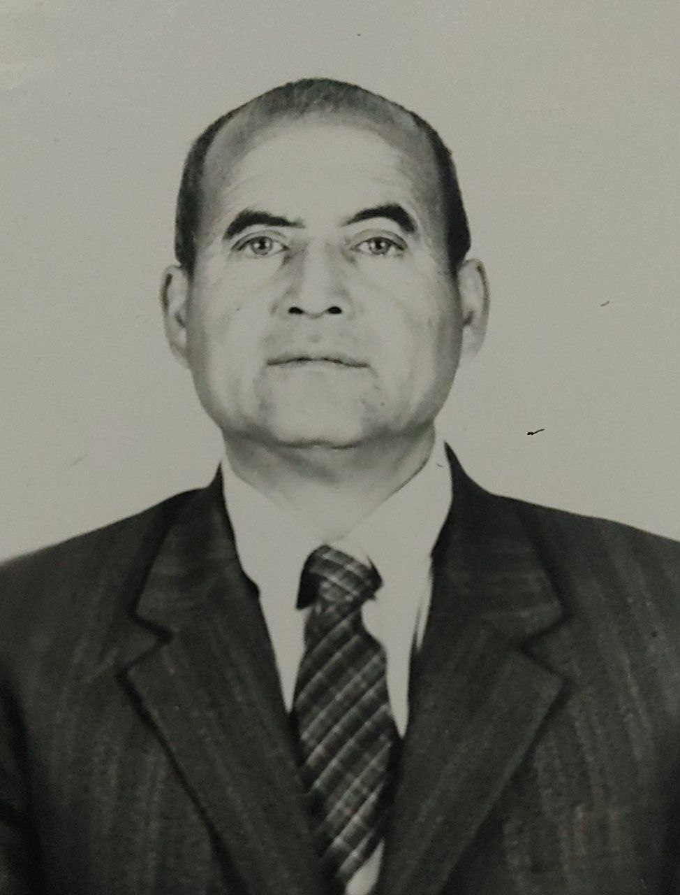
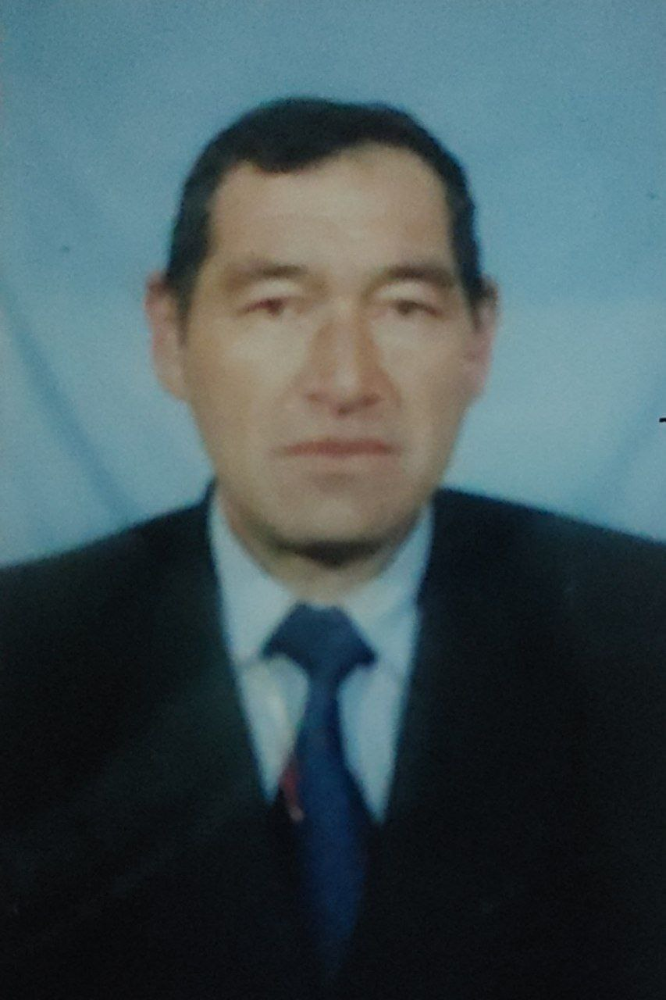
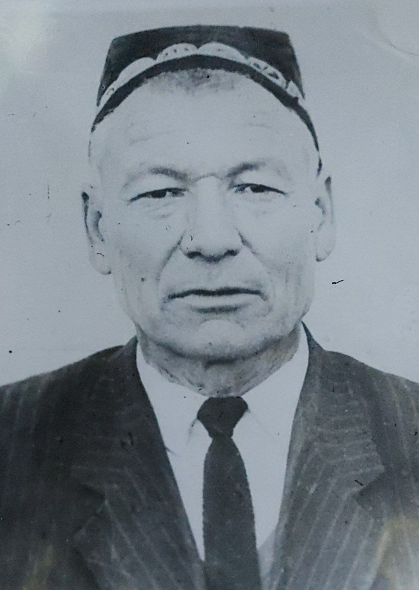
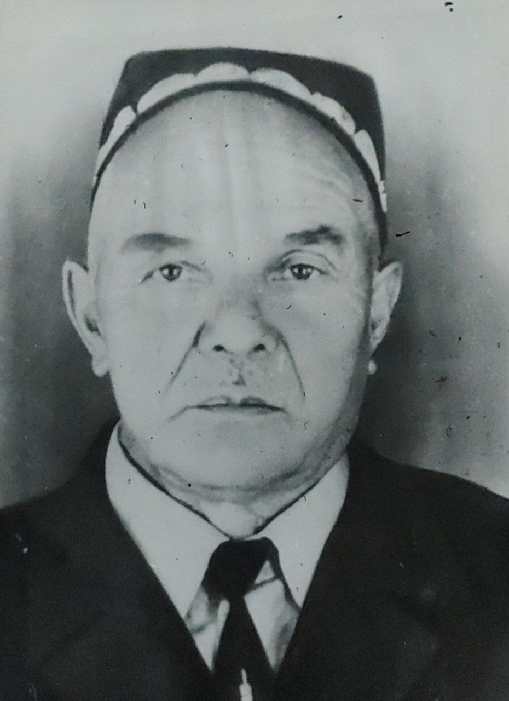
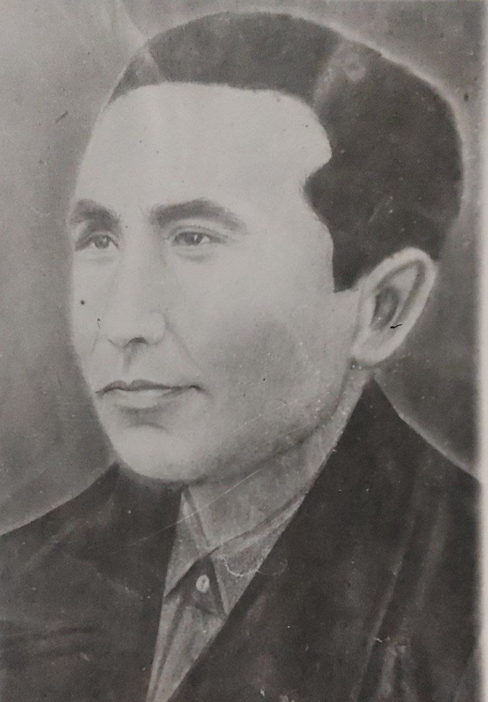
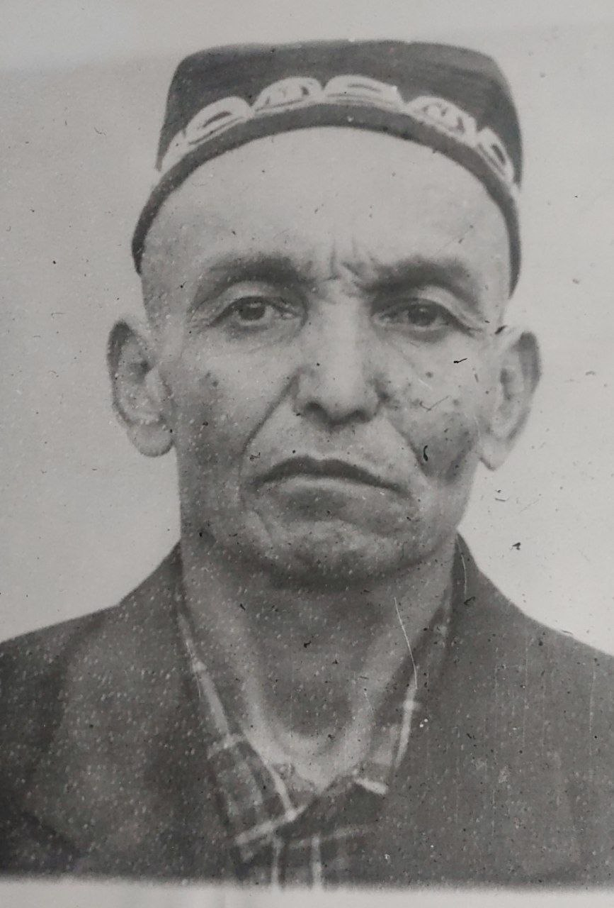

-
Otaxo'jayev Usmonxon Otaxo'jayevich
1939-yil 18-aprelda tug'ilgan.
1962-yildan 1985-yilgacha maktabda boshlang'ich sinf o'qituvchisi,
ilmiy bo'lim mudiri, direktor o'rinbosari
va direktor lavozimlarida faoliyat yuritgan.
2010-yil 14-iyulda vafot etgan. -
Otajonov Hamidjon To'rajonovich 1961-yil 5-mayda tug'ilgan. 1989-yilda 12-maktabga direktor kotibi lavozimida ishga qabul qilingan. 1991-2009-yillar shu maktabda harbiy ta'lim- Chaqiriqqacha yoshlarni tayyorlash fanidan dars bergan. 2009-yil 11-mayda og'ir xastalikdan vafot etgan.
-
Usmonov Isonalixon 1913-yil tug'ilgan. 1938-yilda o'qituvchilik faoliyatini boshlagan. 1941-1943 yillarda Ulug' vatan urushida ishtirok etgan. 1943-yildan boshlab o'qituvchi, ilmiy bo'lim mudiri, maktab mudiri vazifalarida faoliyat yuritgan. "Xalq maorifi a'lochisi", "Xizmat ko'rsatgan o'qituvchi" faxriy unvonlariga ega.
-
Ergashev Umarxon 1911-yilda tug'ilgan. 1937-yildan 1978-yilgacha boshlang'ich sinf o'qituvchisi. 1943-1944-yillarda Ulug' vatan urushi qatnashchisi. 1980-yil 2-sentyabrda hayotdan bevaqt ko'z yumgan
-
Usmonov Ahmadjon 1916-yilda Qozog'iston SSSR, Chelak rayonida tug'ilgan.1939-1962-yillarda o'qituvchi. 1941-1943-yillarda Ulug' vatan urushi qatnashchisi. 1962-yilda xastalikdan vafot etgan
-
Qosimov Bashirxon 1920-yil Chust tumani Varzik qishlog'ida tug'ilgan. Pedagoglik faoliyatini 1940-yilda 6-o'rta maktabda boshlagan. 1965-1979-yillarda 12-maktabda matematika, fizika o'qituvchisi. 1979-yilda xastalikdan vafot etgan.